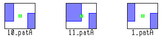
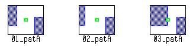

pdl_lib_mgr [-turbo [number_of_processors]]
unfold input filename output filename
[pattern_name pat_name]
[pattern_limit limit_num]
[step_size step_dist | linear_step_size step_dist]
[index_prop prop_name]
An optional argument set that specifies to use multithreaded parallel processing. The argument set must be specified as shown in the syntax line, before the unfold argument.
The optional value number_of_processors is a positive integer that specifies the number of CPUs to use for multithreaded processing. If number_of_processors is not specified, Calibre runs on the maximum number of CPUs available for which you have licenses. For best performance, it is recommended that you avoid specifying this value.
A required argument that specifies the input pattern library.
A required argument that specifies the name of the output (unfolded) pattern library.
See “Pattern Naming in the Output Library” for the pattern naming convention in the output library.
An optional argument that specifies the name of a pattern. If this option is specified, only the pattern pat_name is unfolded and saved to the output database.
An optional argument that specifies the maximum number of permutations that are created for each pattern. If pattern_limit is not set, the default maximum output is 100 unfolded patterns.
The first pattern to be output is always an exact match of the unconstrained pattern polygons. By default (linear_step_size or step_size not specified), the unfolding then proceeds as with the step_size algorithm and a default step_dist of 1 dbu. If linear_step_size or step_size is specified, the unfolding proceeds with the specified process and using the provided step_dist value. The unfolding process continues until all possible permutations are output, or the pattern limit is met.
The pattern_limit option affects the numeric portion of the name of each output pattern. See “Pattern Naming in the Output Library”.
An optional argument choice that specifies to unfold patterns based on a step_dist in microns. Both choices reduce the number of patterns that are output. The step_size argument results in the best pattern coverage if the pattern limit is met before unfolding is complete. The linear_step_size argument outputs patterns in a more intuitive order. If neither option is specified, the default is “step_size 1”.
step_size step_dist
The patterns are unfolded such that the original pattern, maximum inside, and maximum outside movements are output first. Then the edges near the midpoint of the allowed edge movement are output. Next, more edges are output at the midpoints between previously output edges. Edge movement is always in multiples of step_dist, except for the edges output at the maximum inside and maximum outside movements. This ordering of output patterns ensures that edges at the maximum and minimum range are output first, so that more of the constraint range is covered before reaching the pattern_limit, if one is specified.
linear_step_size step_dist
The patterns are unfolded in a linear, increasing order. The moving edge of the pattern moves by the specified step_dist until the distance to the maximum outside or inside edge is less than the specified value. The moving edge then moves the remaining distance to the maximum constraint value. If a pattern_limit is specified, unfolded patterns at the maximum range may not be output, unlike the case with the step_size option.
For example, assume a pattern to be unfolded has a single moving edge with a maximum inside movement of 0.04 um and a maximum outside movement of 0.06 um. A step_dist of 0.01 um results in eleven output patterns with the moving edge at these locations, depending on the option used:
step_size 0.01: 0, 0.06, ‑0.40, 0.01, 0.04, ‑0.10, 0.05, 0.03, ‑0.02, 0.02, ‑0.3
linear_step_size 0.01: 0, ‑0.01, ‑0.02, ‑0.03, ‑0.04, 0.01, 0.02, 0.03, 0.04, 0.05, 0.6
An optional argument that adds a numeric property named prop_name with a unique value to each pattern. The property value starts at one with the first pattern that is output and is incremented by one for each subsequent output pattern. If a library contains a property named prop_name, the value is overwritten.
The unfold utility reads a pattern matching library (PMDB) with constrained patterns and outputs a series of patterns without constraints (the unfolded patterns).
Patterns without constraints are copied to the output library. Invalid patterns are not copied. The default behavior uses “pattern_limit 100” and “step_size 1”.
The unfold utility can also be run from the Calibre Pattern Matching GUI; see “Unfolding Patterns in a Library Using the GUI”.
Unfolded patterns in the output library are named with this convention: <unfold_count>_<source_pattern_name>
unfold_count — An integer that starts at one for the first unfolded pattern of each source pattern and is incremented by 1 for each unfolded pattern. That is, for patterns patA and patB, the first unfolded patterns for each pattern are named 1_patA and 1_patB, respectively. The second unfolded patterns are named 2_patA and 2_patB.
If “pattern_limit limit_num” is specified, the minimum number of digits in unfold_count is the number of digits in limit_num. For example, if limit_num is 500, the first unfolded pattern for patA is named 001_patA. You can force more digits to be used by adding leading zeros to limit_num. This feature is useful when the unfolded pattern library is input to the pdl_lib_mgr write_oasis utility, as explained in the following section.
source_pattern_name — The name of the pattern being unfolded.
Patterns without constraints have the same name as the source pattern.
The write_oasis utility outputs patterns alphabetically, with the alphabetically first pattern in the lower left corner of the OASIS layout. Without the use of the pattern_limit option, the alphabetical sort may not output patterns in the order they were unfolded.
Suppose a library has pattern patA, and the following unfold command is used:
pdl_lib_mgr unfold input lib1.pmdb output lib1_u.pmdb step_size 0.2 This results in 11 unfolded patterns, which are sorted alphabetically as follows.
10_patA, 11_patA, 1_patA, 2_patA, … 9_patA
Running write_oasis on the unfolded library results in this output for the first row of output patterns:

The following command uses a pattern limit larger than the maximum number of unfolded patterns:
pdl_lib_mgr unfold input lib1.pmdb output lib1_u2.pmdb step_size 0.2
pattern_limit 20The resulting unfolded patterns are sorted alphabetically as follows.
01_patA, 02_patA, 03_patA, … 10_patA, 11_patA
Running write_oasis on the unfolded library results in this output for the first row of output patterns:

The write_oasis utility can also sort output by a property value with the sort_by argument.
For example, the library liba.pmdb has a pattern named pat_2 with one edge that can move out 0.1 microns. The following command unfolds only pat_2 and limits the number of unfolded patterns to three:
pdl_lib_mgr unfold input liba.pmdb output liba_unfold_pat2.pmdb \
pattern_name pat_2 pattern_limit 3These permutations of pat_2 are saved to the output library liba_unfold_pat2.pmdb:
1_pat_2: The drawn pattern with no constraints.
2_pat_2: The pattern with the constrained edge at the maximum movement (0.1 microns).
3_pat_2: The pattern with the constrained edge at the midpoint of its allowed movement (0.05 microns).